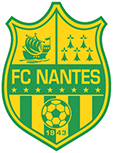

Динамо - Шахтер Дирекция Премьер-лиги утвердила время начала матча центрального поединка 11-го тура чепионата. Матч Динамо – Шахтер пройдет в пятницу, 16 октября, в 19:00 по киевскому времени ... 24.09.2015
Прогноз матча Кан - Нант (Франция)

Кан - Нант
Чемпионат франции
- Дата матча: 23.10.2015
- Время матча (Киев):19:30
- Прогноз матча: Х2
- Тип прогноза: Простой
Решил все же черкнуть пару строк почему я так думаю. Все сразу писал на чистовую, посему пардон за мой безграмотный в некоторых случаях словооборот и синтаксис. Ну во первых я перестал операться в прогнозах на то что у кого -то состав лучше, у кого-то состав хуже. Иногда игрок замены в конкретной игре действует в разы лучше, чем игрок основы. В этой игре для меня главный аргумент это конечно же беспроигрышная серия Кана. Увы и ах, все проще простого, одни играют на контратаках, сейчас имею ввиду Кан, Нант тоже думаю не будет сильно лезть вперед, но опять же это все такого рода п редположения, которые невозможно предсказать в связи с человеческим фактором, а как известно в футбол играют люди. Ну и как всем известно, у кана еще нет ничейных исходов за этот чемпионат, жду. Всем хорошего вечера и удачных ставок.
Последние статьи
Грандова хвороба Вест Хема Нікому не спадало на думку звернути увагу на те, що Біліч просто феноменально вміє налаштувати свою команду на грандів, а потім відпускати на самотік матчі з середняками і аутсайдерами ... 24.09.2015
Коли програє Інгольштадт? Якщо чесно, то три сухих виїздних перемоги поспіль у виконанні новачка Бундесліги уже і так натякає, що пора б задуматися над тим, коли ця серія закінчиться ... 24.09.2015